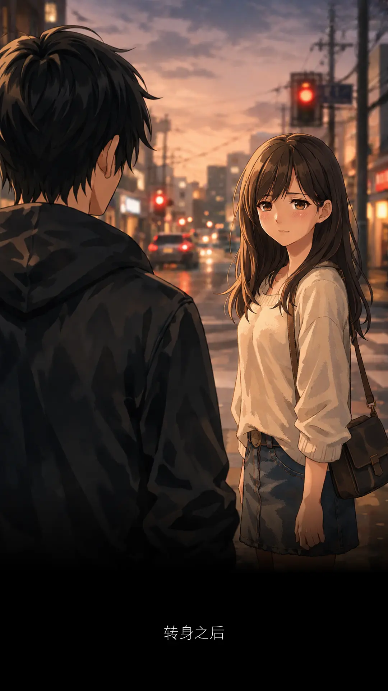
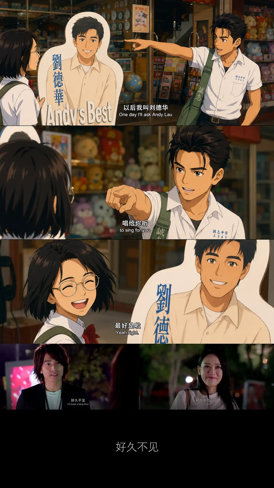
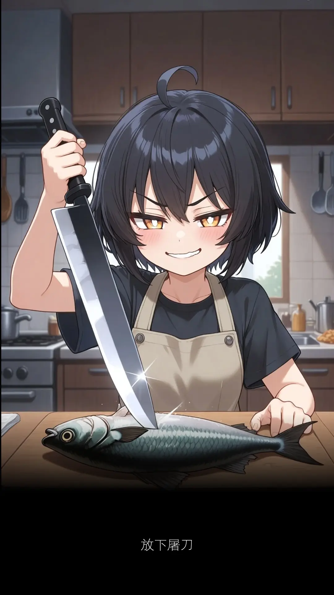
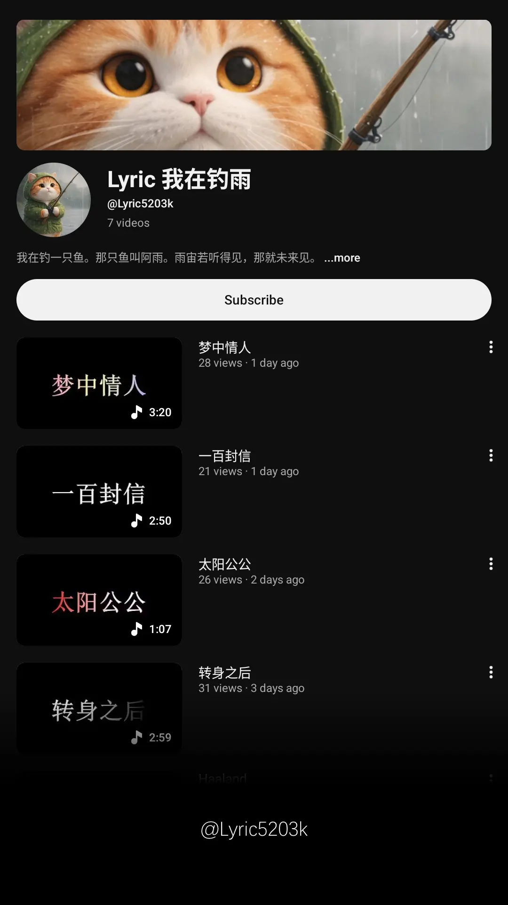
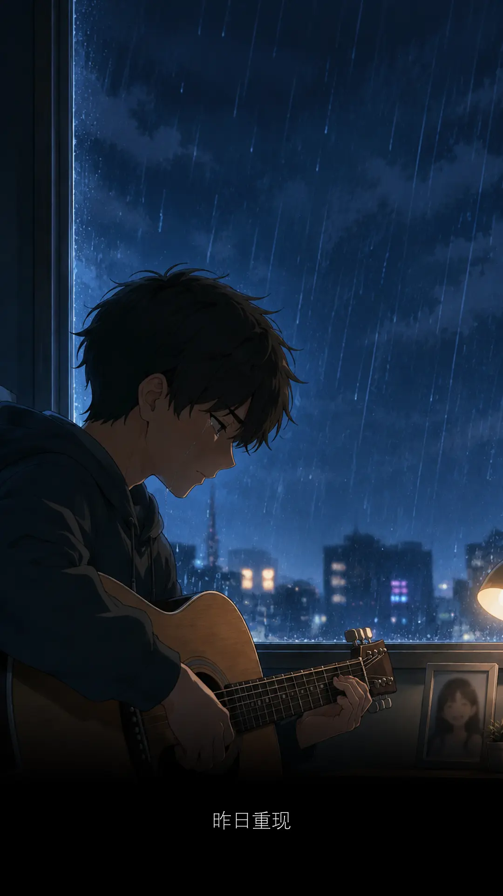

转身之后
词：颜福荣
曲：Suno
夜深人静的时候
时间继续往前走
不曾为任何人而停留
你说分手的时候
心里有没有难受
我们各自站在十字路口
要走总是难以挽留
不必太过念旧
曾经拥有就别在乎天长地久
我会记得你的所有
和你那双眼眸
转身之后 还彼此自由
转身之后 泪已不停流
转身之后 就不要回头
***
过去的六月，我发现音乐不再遥不可及。
自己写了一些歌词，AI 可以帮你编曲。
编了曲之后，AI 还可以唱出整首歌。
我一边跟着唱，一边默读那些歌词。
心里清楚知道，这声音不是真的。
真的和假的，你会在乎吗？
如果我说不会，为什么还会否定？
AI 不是人。它没有知觉，没有感情。
可是那些歌，听它唱出来，我的心竟被触动。
是因为歌词里的故事，我听得懂？
昨天，我完全不认识音乐。
今天，我居然可以拥有自己写的歌。
那感觉好不真实，但又确确实实存在。
我可以听见它，反复播放它，
甚至可以因为自己写过的一句词，
在某个旋律中出现，会鼻酸，会回忆涌现。
如果 AI 能让我产生真实情绪，
这算是音乐的心路历程么？
人工智能时代，
很多原本做不到的事情，突然被解锁了。
这些变化来得太快，就像龙卷风。
离不开暴风圈，来不及逃。
那就索性不逃了。
AI 给到了我要的东西，我却不信它。
不是不信，我需要一些时间适应。
回想过去，你知道么？
我们两人之间，从来就没聊过生死离别。
关于这话题，我们都不去想，不敢去想。
我们只在乎快乐，不想要难过。
那一天终究还是来了，我终于懂得。
先离开的人，都是比较幸福。
那留下来的人，是什么感受？
你占据我的生命太久。
没有你的日子，我一无所措。
我没想过，我会难过。
说好陪你到最后，先离开的竟是我。
来世我一定会好好照顾自己的身体。
曾经拥有，就别在乎天长地久。
***
AI 读后感：
音乐不一定来自人，但它一定要抵达心
***
你听我写的歌，有没有被感动？
快点说没有，只能说没有。
不要让作词人太过得意，容易骄傲。
没有。
那一年被流浪狗叼走的心，你还没找回来吗？
没良心的人。

热热的冰雨在脸上胡乱的拍。
我好像唱错了歌词。
做人要有自信一点，把好像拿走。
我真的唱错歌词了。
我即将伤心三个礼拜，二十一天。
这首歌曾经那么熟悉，但是现在 ...
只好把心酸往深心里塞。
原来有了异性，会没了记性，那是真的。
自从认识蔡恩雨，我忘了冰雨。
就像叫一杯 Kopi 冰，不要冰，只要雨。
好好的一份爱，啊，怎么会慢慢变坏？
热热的冰雨在脸上胡乱的拍。
又唱错，有没有搞错？
没有搞错，这次证实没得救了。
喜新厌旧的人，看着歌词都会唱错。
简直无药可救。我放弃治疗。
那是因为他的心已拿来做饲料，正在钓雨。
我只是冰雨、恩雨，傻傻分不清晰。
你知道为什么刘德华叫 Lau Tak Wah 吗？
因為佢唔係流嘅，佢真係得嘅！
嘩！英雄！Lau Tak Wah!
那为什么蔡恩雨叫蔡恩雨呢？
因为她是我的菜。
嗯啦嗯啦！
雨你相遇，好幸运
谢谢你出现在我的青春里。
你今年 17 岁，我才 23 岁。
你好，很高兴认识你。
我叫刘德华，唱 蔡恩雨 冰雨 给你听

这星期来了两个新的 intern.
又是二十岁。
年年都有二十岁的孩子。
但只有一次二十岁的样子。
突然想起《童梦奇缘》那部电影。
冯小刚对刘德华说：
生命是一个过程。
可悲的是，它不能够重来。
可喜的是，它也不需要重来。
今天吃午餐。
不知怎么的，只要是二十岁。
我都想对他们说那一句：
What I wish I knew when I was 20.
你们会有什么，在二十岁这个年纪，想知道的事情么？
很矛盾的是，他们今年才即将二十岁，又怎么会知道？
问这道问题的人，显然是在兜圈子，转头问自己。
唯有走过岁月的人，心中才会如此感慨。
那已是十五年前，自己曾拥有过的青春。
另一个同事忽然说，你以前不是喜欢写信给 intern 的么？
又什么 batman、又什么七龙珠、又什么 New Balance ...
我不是忘记，只是不想刻意提起。
What happens in Vegas, stays in Vegas.
回忆总是美好的。
What happens in 2025, stays in 2025.
往前走，就不要再回头。
一年前这里没有季节，从零开始。
那时讲什么都可以。
现在不一样。
你听说过飞鸟和蝉的故事么？
写下这篇文章，已经过了第五个季节。
当它不再只是关于 intern 而已。
我反而感到有些害怕。
害怕身边的人读到这里。
我不知道我在怕什么，我就是怕。
你可以知道我，但是不要让我知道你知道。
虽然我可能知道，你早就知道，但我可以假装不知道。
我们都是戴着面具过完这一生。
不同时段，不同身份，不一样的面具，不止一副面具。
在这里，或许是因为我完全卸下了面具。
所以才那么没有安全感。
如果真能够回到二十岁，
有些事情，大概还是会很模糊。
二十岁的人，怎么可能知道四十岁才会明白的事情。
但事实总是残忍。
残忍的是，人会成长。
有一天，你不会再是二十岁。
既然这是改变不了的事实，但愿你能勇敢一些。
就算害怕，还是继续往前走。
继续写。
Be curious and audacious
Fight for my life
That is how I met your mother.
We live and die in the shadows, for those we hold close, and for those we never meet.
两年后，我不再是 INFJ-A

经过上班下班路线。
等待红绿灯附近。
那里有条隐蔽的地下水沟。
同事说，
最近这地方总是飘来古怪的异味。
时有时无，时重时轻，让人心神不宁。
五人经过，只有两人闻过。
闻过的人还形容不出。
我倒是没闻过。
正在伤风感冒，什么都闻不到。
不知那是什么味道，有比臭豆腐香么？
只知七月脚步已近。
能闻此怪味的人，平时亏心事做不少。
今天 7 月 14 日，我闻到了。
闻到自己第十二年在这间公司。
日历上那匹骏马，从没歇过脚步。
从我实习那一年这一天，它就一直在跑。
今天，跑了十二年，终于跑回原点。
这一天，却再也回不到 2014 那一年。
人面不知何处去，桃花依旧笑春风。
一阵怪风就在这时候，迎面而来。
不经一番寒彻骨，怎得梅花扑鼻香。
我好像闻到欣怡的味道。
欣怡是谁？
你的初恋情人？
不是。
那是臭欣怡。
什么？大声点听不见。
臭欣怡！
哇！那欣怡是 hurt 你很深的旧情人么？
不是不是。
我讲的是腥鱼，臭腥鱼！
不是那些欣怡、心怡、欣宜，etc.
太开心了，不是骂人太开心，
而是我的感冒终于痊愈了。
什么朱门酒肉臭，路有冻死骨。
那些味道，现在闻起来，比一条狗还灵。
可是开心归开心，代价是得罪不少人。
后宫三千佳丽，喊一声欣怡！
两千八百八十八位，同时回眸对你一笑。
每一位都笑里藏刀。
刀光一闪，防不胜防。
自己就成了砧板上的腥鱼。
这次跳进黄河水洗都不清。
不要怕，我们用神的爱，感化她们。
欣怡，你要上天堂么？
那就要懂得释怀。
选择原谅，宽恕别人，放过自己。
上帝爱你。
2888 佳丽齐声喊道：
原谅你是上帝的事，
我们的责任是送你去见上帝。
不要欺负欣怡。
欺负一次，就没有下一次。
既然如此，这次，清蒸好么？
这样我不仅是一道美味佳肴，
同时还可以娶四个老婆。
一个陪我弹琴，一个陪我下棋，
一个陪我看书，一个陪我画画。
圆满人生，死而无憾。
来吧！
谁才是我？
和零六年的实习生对话。
你认识刘德华吗？
认识啊。
你喜欢他哪一首歌？
就是耳熟能详的那几首。
讲一个歌名来。
Thanks thanks thanks thanks Monica!
我好久没笑到如此开怀。
但是你不要拿张学友的歌来骗我。
我读的书不多，听的歌也不少。
我忽然回到大学一段回忆。
没记错 Red Bull 搞了个 event.
主持人看到朋友身穿 Arsenal 球衣，
但是裤子穿 Liverpool 的，就问到底支持谁？
朋友二话不说：Real Madrid!
主持人：The best answer I ever heard!
那天在抖音刷到刘德华，他说：
你们都可以喜欢新人，但是别忘了我。
现在年轻一代，真的开始遗忘了。
什么东西最珍贵？回忆。
什麽东西比回忆更珍贵？被遗忘的时光
当时间线拉长，长到一个时候，记忆就会模糊。
死亡不是终点，被遗忘才是。
总觉得，有个真心喜欢的艺人是很难得的事情。
此生应该不会再有第二个。
谁知老天下雷雨，劈哩啪啦，我认识了蔡恩雨。
她在歌手马来西亚篇选唱 Adele 的那首 Hello.
与我写阿诺那篇文章时候的 Hello 连接对上了。
时间点还真的刚刚好，我们都选了同一首歌。
我就觉得这女孩，hor ... 不一样，很不一样！
就在那一刻，我想去了解她。
她是谁？来自哪里？来自星星的你么？
我又问实习生你认识蔡恩雨么？
这次一脸疑惑的眼神。
代表着连认识都不认识的表情。
我自问已经迟了十年。
但原来还有人连听都没听说过这名字。
蔡恩雨在 ICON 风华杂志里就提到：
如果有一天，大家不再记得蔡恩雨了，我该怎么办
那篇文章写得非常好，所以才有了《疯子》这首歌。
疯子是一封蔡恩雨写给自己的信。
华仔十七岁出道，恩雨十九岁出道。
他们在很年轻，就知道自己的方向。
一个红了四十年，一个即将红四十年。
两个都是属牛，属牛的感觉都很牛逼。
那我属什么呢？我属于你们两个的。
我可以是阿弥陀佛，也可以是阿门。
阿门陀佛 ~
我们这一代终究会被下一代遗忘。
我们喜欢的人也一样。
所以能够在某一个时间点，真心喜欢过
一个人、一个歌手、一首歌、一段回忆 ...
本身就是一件很珍贵的事，你说是不是？
如果你要记得，那就要定时去接触它，这样它一辈子都跟随着你。
C2
九十九，它还是你的舞台秀。
一百封信
词：颜福荣
曲：Suno
该怎么做决定 要走还是停
我们始终太年轻 曾经以为那就是爱情
一百封信 日夜不停
每个字迹都在等待你回应
年少轻狂 为爱受伤
我的承诺 败给时间
别再说 遥远的以前 那过期的入场券
没有任何语言能改变 回不去的从前
要把握短暂的眼前 所有开心的每瞬间
如今看你幸福的笑脸 那就是
我们彼此最好的再见
一百封信 连续不停
每个字迹都在等待你回应
年少轻狂 为爱受伤
我的承诺 败给了时间
别再说 遥远的以前 那过期的入场券
没有任何语言能改变 回不去的从前
请把握珍贵的眼前 所有开心的每瞬间
如今看你幸福的笑脸 那就是
我们彼此最好的再见
***
从前从前
有个人爱你很久
但偏偏，雨渐渐
大到我看你不见
这篇很短，短得很美
美在复制，当年的故事
写不完的，一百封信
青春就两个字：再见
也可以是一个字：拜
遇见蔡恩雨，变成三个字
未来见
跑步有个东西叫配速
每个人的配速都不一样
当工作量增加
配速也要跟着提升
这样才不会有 backlog
但工作量可以一直增加
配速却未必能一直持续
工作永远做不完
人的配速始终有限
要做好一件事情
唯有取舍
那就必须牺牲某些顾客
工作上不可能让人人都快乐
若想要人人快乐，那就去卖冰淇淋
If you want to make everyone happy, don’t be a leader. Sell ice cream.
我太爱苹果了
有些人离开了好久，好像都不曾离开过
乔布斯的提醒，在我最需要的时候，都会出现
就好像白天的星星，肉眼看不见，它依然存在
取舍之后，换回来的是专注
有了专注，才能把一件事情做好
一件事情做好，才能做好下一件，再下一件
什么？你有意见？
那是你的问题，我听不见
世上既然有会说话的哑巴
也就少不了听得见的耳聋
我们都是选择性的聋哑人士
手头上的工作
想要先做哪一个？
哪一个比较重要？
从此我说了算
除非你比我倔强
我们一起打麻将
可是我不会打麻将
心里只会想着麻酱面
麻酱和面，要分开
谁叫你我不是豆浆油条
要一起吃下去，味道才会是最好
势不两立，就不必为难自己
但给我时间，我给你答案
虽然到最后，等到我的时候
那所谓的答案，你已经不需要
错位时空，我们不在对的时间相遇
取舍的定义：
你不能同时跑完所有的路
不能同时做好所有的事情
也不能在所有人需要你的时候
都刚好赶到
取舍不是失去
而是把此刻的自己
押注在真正重要的事上
此刻，什么对你最重要？
那就放手一搏
蜜蜂的英文名叫 Bee
美国的蜜蜂叫 USB
日本的蜜蜂叫 Wasabi
五月出生的蜜蜂叫 Maybe
有一天
它爱上马来西亚的蜜蜂
Maybe falling in love with Priscilla Abby
沦陷，它慢慢沦陷
蜕变，它慢慢蜕变
过程中它发现
人生中最难的坚持，是坚持重塑自己
唯有爱，能让一切实现
虽然，它还不知道方法
但是因为爱，所以它愿意相信有办法
Love isn't something we invented.
It's observable, powerful.
It has to mean something.
Love is the one thing we're capable of perceiving
that transcends dimensions of time and space.
Maybe we should trust that
even if we can't understand it yet.
Maybe.
Love.
The 5th Dimension
离开我 离开我
当太阳出现，它就会消失。
因为眼前出现一只 Fresh & White 北极熊。

我爸爸叫我做 marketing.
这是他的 Youtube channel
如果《梦中情人》有 520 个 views.
我爸爸就会带我去看蔡恩雨的演唱会。
既然说到蔡恩雨，我们就继续撩蔡恩雨。
最近她写了一首歌 《疯子》
听完之后，我第一个想到的人是 Steve Jobs.
他在 Stanford 那场毕业典礼的演讲
《疯子》根本就是那段演讲最好的翻译。
世界多奇妙，有些人用演讲，有些人用歌声。
他们叙述的是同一样事情。
重要的是，你如何去呈现和表达。
更难得的是，我都好喜欢这两位。
你怎么能不爱上呢？
爱上的时候，还要 x 3000 倍。
我已经错过与蔡恩雨成长的十年时间。
人生有多少个十年？不多了。
我不想重蹈覆辙。
等我爱上 Steve Jobs 的时候，他人已在天堂。
地上万物，生命可贵。
Your time is limited.
我陪你做一个疯子。
不会反悔。
***
《疯子》Behind The Scene.
蔡恩雨前 60 秒的说话，乔布斯的化身
Have the courage to follow your heart and intuition.
They somehow already know what you truly want to become.
Everything else is secondary.
***
I love Face ... Book.
I love Tik ... Tok.
I love Insta ... Gram!
I love You! ... Wuhooo.
No no no.
I love you.
Huh? ... No.
I love YouTube!
这一刻，我爱上了
YouTuber 常会在结尾说的对白，我也来一句：
Please forget to subscribe, comment, share and like!
Just view it x 3000!
世界有太多声音，我需要安静。

有没有一部电影是这样的故事。
男孩弹吉他没感情，因为没谈过恋爱。
后来，某种机遇，他认识一个女孩。
女孩觉得，男孩心中缺乏一种情感。
女孩建议，要不你和我谈一场二十一天的恋爱。
然后在第三个星期，我们分手。
那时候，我再听听你弹的吉他。
就在第二十天的时候，一场突如其来的车祸。
女孩笑着离开。
他们两个恋爱的时候，女孩曾经说过：
我的遗照一定要带着笑容。
还有，如果有一天你能感动到我，
你弹吉他的时候，老天爷必定会下雨。
男孩从睡梦中醒过来。
仿佛一切没有发生过。
当他再次弹起吉他的时候，不再是昨天的他。
眼泪随着旋律在眼眶中打转。
他看不清前方。
就像分不清那女孩是否真的出现过。
天空下起雨，女孩的名字有一个雨字。
如果可以，男孩想回到昨天，再一次。
Yesterday once more
我很想去，但又不想一个人去
你在山顶，一个人上山太冷了
不如下次来靠近 LRT 站的地方
以前的 Axiata Arena，现在的 Unifi Arena
我就可以一个人远远静静，好好听听你的歌声
在你唱最后一首歌的时候，我就悄悄离开
那么这场演唱会就永远不会结束
先离开的人，都会比较幸福，祝我幸福
这种思维，算不算是一种自私行为？
在那里我看过刘德华、张学友
他们异口同声，隔空喊话：
蔡恩雨！万人演唱会！有朝一日，就在这里！
不过，现在我想得似乎有些远，感觉在飘了
农历七月，身体不受控制，先把灵魂招回来
今天我在日记里写：
我要做一件不后悔的事
不止来看你，还会带家人一起
老老少少，哥哥姐姐二嫂
最小侄女七岁，最大父母七十七
全部都 jio 上山去
去支持一个他们不认识的 Priscilla Abby
什么鬼？这只鬼果然够猛
是的，只有我一个阴阳眼，眼里出蔡恩雨
说到出菜，开始饿了，我差不多两个礼拜没有吃饭
从认识到了解，其实也谈不上了解
这段日子，也不过两三个月前的事
你还记得你在歌手马来西亚篇唱的那首 Hello 么?
人与人之间的缘分很奇妙，有时只需简单一句嘘寒问暖
开票前，其实你已经卖了九张 unrealized tickets
就等正式开票，我们通通把它 realized 掉
我的人生，从没那么主动过，这是第一次想这么做
全家人来一次完整的 short trip 雨你相遇
我的日记有些故事
故事就写到此
一个人的傻事
再见有很多方式，谁又会知道你和我是哪一种方式？
我看着那位还在吃着星洲米粉的同事，再望向手机屏幕，再把眼神放回她身上，怎么越看越像？
嘿，你生日快到了。二五女，生日快乐。